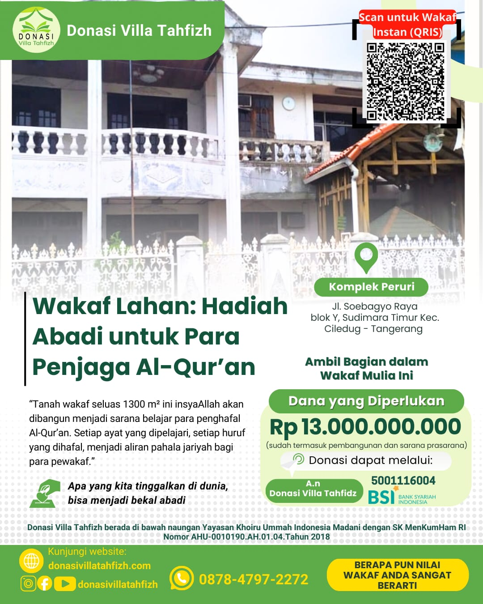

1300m² untuk pusat tahfizh generasi Qur'ani — Setiap ayat yang dipelajari, setiap huruf yang dihafal, menjadi aliran pahala jariyah bagi para pewakaf.
Sebuah langkah mulia untuk membangun rumah bagi para penghafal Al-Qur'an

📍 Kondisi Lahan Saat IniTanah wakaf seluas 1.300 m² di Komplek Peruri, Jl. Soebagyo Raya blok Y, Sudimara Timur, Kec. Ciledug — Tangerang ini insyaAllah akan dibangun menjadi sarana belajar para penghafal Al-Qur'an.
Villa Tahfizh akan menjadi pusat pendidikan tahfiz yang dilengkapi asrama, ruang belajar, musholla, dan fasilitas pendukung untuk mencetak generasi Qur'ani.
Setiap ayat yang dipelajari, setiap huruf yang dihafal, menjadi aliran pahala jariyah bagi para pewakaf. Dampaknya tidak hanya dirasakan sekarang, tetapi untuk generasi mendatang.
"Setiap huruf yang dihafal menjadi pahala jariyah — apa yang kita tinggalkan di dunia, bisa menjadi bekal abadi."
Masukkan nominal wakaf untuk melihat seberapa besar lahan yang bisa Anda wakafkan
Pilih metode pembayaran yang paling nyaman untuk Anda
Scan kode QRIS di bawah ini menggunakan aplikasi mobile banking atau e-wallet Anda
Transfer ke rekening Bank Syariah Indonesia (BSI) berikut:
Setelah transfer, konfirmasi donasi Anda melalui WhatsApp untuk mendapatkan bukti penerimaan
💬 Konfirmasi WhatsAppDonasi Villa Tahfizh berada di bawah naungan yayasan yang legal dan terverifikasi
AHU-0010190.AH.01.04.Tahun 2018
Badan hukum yayasan resmi terdaftar
Terdaftar sebagai wajib pajak aktif
Komplek Peruri, Jl. Soebagyo Raya Blok Y, Ciledug — Tangerang
Pimpinan Yayasan Khoiru Ummah
Administrasi & Dokumentasi
Pengelolaan Keuangan
Pantau perkembangan pembangunan Villa Tahfizh secara berkala
Tim yayasan melakukan survey ulang dan pengukuran lahan di Komplek Peruri untuk persiapan pembangunan tahap pertama.
Sosialisasi program wakaf Villa Tahfizh telah dilakukan di berbagai komunitas dan masjid di area Jabodetabek.
Alhamdulillah, dana wakaf yang terkumpul telah mencapai 60% dari target. Terima kasih kepada seluruh wakif yang telah berpartisipasi.
Setiap detik yang berlalu adalah kesempatan untuk meraih pahala jariyah abadi